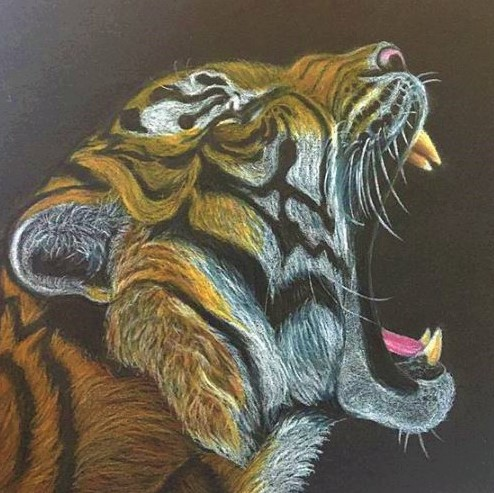
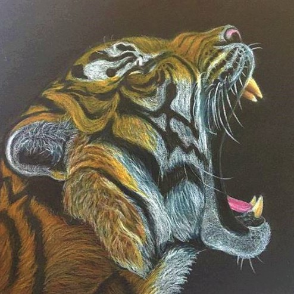

Asbjørn går til daglig på arkitektsskolen i Aarhus, men har også en kreativ fritidsinteresse, der fylder meget i hans hverdag. Han laver nemlig møbler i træ i sin fritid. For ham er træ et fantastisk materiale at arbejde med, og han kan også koble den viden han får på studiet med denne hobby. At bygge ordentlige funktionelle, samt æstetisk flotte møbler ser Asbjørn som en færdighed, der tager tid at udvikle. Han har gennem de sidste fem år bygget ting i træ. Det er nu blevet en noget mere avanceret hobby end da Asbjørn først begyndte. Først kunne han tegne møbler, da han havde kendskab til nogle programmer på computeren, der gjorde det muligt at tegne meget præcist. Dog kunne han kun til at starte med, bygge simple versioner af disse møbler. Med tiden er hans designs begyndt at kræve nogle mere avancerede maskiner, for at kunne udskære og producere møblerne mere præcist. Asbjørn lader sig inspirere rundt omkring i byens lokale møbelforretninger, som der er nogle stykker af. Her får han inspirationen til en ny måde at lave udskæringer og samlinger på, samt brug af nye træsorter.
Som studerende mener Asbjørn, at det er en dyr hobby at dyrke, da han både skal have adgang til dyre maskiner og træmaterialet. Derfor køber Asbjørn altid træ fra brugte møbler på loppemarkeder og den blå avis. Derudover kan han også få et overskud fra sine møbler, som han indimellem sætter til salg.
Asbjørn mener at dette er en helt fantastisk beskæftigelse, som sommetider ikke blot bliver en hobby. Hvis han ønsker, kan han tage produktionen og design af møbler til et nyt niveau. Han kan varmt anbefale at starte på denne hobby, hvor man kan skabe noget, der ikke blot skaber glæde i ens eget hjem, men også andres. Asbjørn vil anbefale, at man tager ned forbi Godsbanen, hvor der tit er arrangementer og kurser, hvor man får muligheden for at bygge ting i træ, samt at man lærer andre mennesker at kende.

Marie dyrker i sin fritid syning. Hun har en generel interesse for mode, som også kommer til udtryk i hendes fritidsjob i damemodeafdelingen i Salling. Tøj er for Marie en måde, hvorpå man kan skabe og udtrykke sin identitet igennem. Det er derfor naturligt for Marie, at sy sit eget tøj. På den måde kan man både følge mode og skabe mode, eller blot sætte sit eget præg på ens beklædning. På den måde mener Marie, at udtrykket kan blive helt unikt. Hun nyder så meget at sy, at hun altid finder tid til det, uanset hvor tralvt hun har. For Marie betyder det at sy, at hun kan få et pusterum fra hverdagens stress. Normalt har hun nemlig meget travlt, så syning er en kæmpe frihed for hende.
Marie har syet i mange år, og kan næsten ikke huske hvor længe, det har optaget hende. I hjemmet har symaskinen altid været en fast del af interiøret.
Marie begyndte for alvor at gøre noget ud af sin hobby med syning, da hun startede på et FOF-kursus i Aarhus med syning. Dette kursus gik hun på i flere år og har i den tid også udbygget sin interesse. Nu tager Marie også imod bestllinger fra nære og bekendte, som ønsker at købe nogle af hendes unikke syprojekter. Det er alt fra at lægge et par bukser op, til at sy en kjole til en festlig lejlighed. Marie fortæller selv om, hvordan hun syede gallakjoler til hende og veninden. Marie elsker at glæde andre med tøj, som er syet lige præcis til dem.

 


Sarah er meget passioneret omkring forskellige former for illustrationer. Hun illustrerer gennem blyant og pensel, både med og uden farver. Hun nyder at sidde og skitsere i timevis. Det er en måde hvorpå hun lærer at afbillede objekter, mennesker eller dyr meget virkelighedstro. Samtidig lærer hun også en masse om dyrets og menneskets anatomi, idet hun forsøger at rekreere hver eneste lille detalje så præcist som muligt. For Sarah er denne kreative hobby meget afslappende, men også tidskrævende. Derfor kaster hun sig som regel ud i projekter, der kan tages i små bidder, så hun kan få tid til det ved siden af studiet. Det betyder meget for Sarah at have denne hobby, da hun mener det hjælper hende til at koble af. Hun mener også, at hun får en helt unik evne til at visualisere, det hun tænker og observerer, som kun få mennesker kan, da de ikke dyrker tegning på daglig basis.
Sarah har i mange år tegnet og har gennem årene forbedret sin evne til at gengive den virkelighed, der omgiver hende. I de senere år har Sarah også deltaget i arrangementer og kurser med tegning og maling, som finder sted rundt omkring i Aarhus. Hun udpeger især her ét arrangement, som hun mener man bør besøge. Det er Tegneklubben i Aarhus, som hver uge afholder en tegne/male aften, hvor man bare kan komme og være social omkring sin hobby. Den finder sted på en cafe i Aarhus, som er forskellig fra uge til uge.